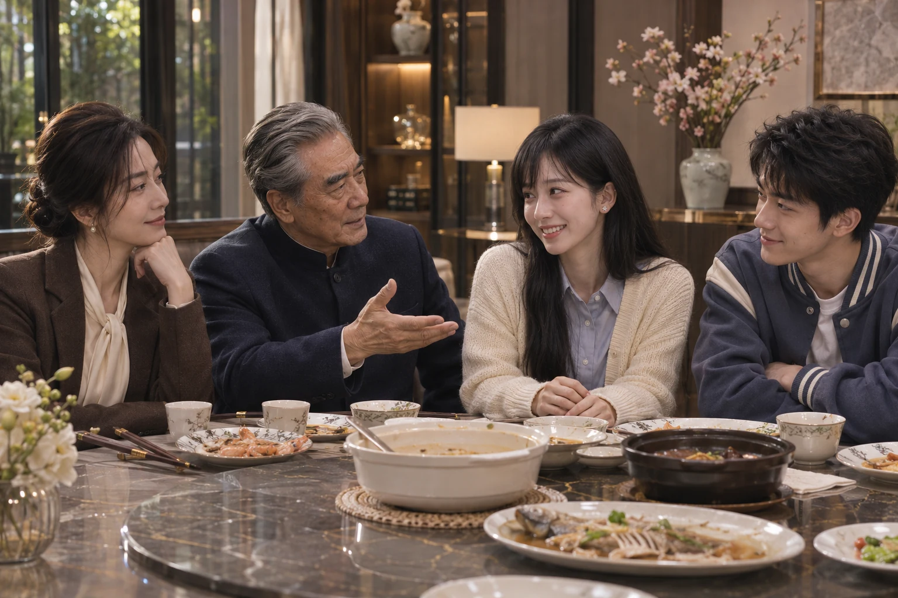
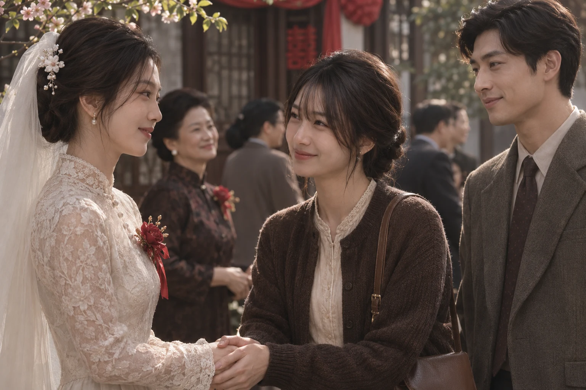

ตอนที่ 19
ยกที่หนึ่ง
“ลองดูดีไหมลูก ไม่ต้องลงแข่ง แค่ร่วมแสดงเปิดรายการก็พอ ดีกว่าอยู่บ้านอุดอู้” โจวจิ่วฟังคำบอกเล่าจากหลานชาย ก็แนะนำให้ลูกสาวเข้าร่วมรายการทันที
ความจริงซ่งอวิ๋นชอบอยู่บ้านเป็นปกติอยู่แล้ว ไม่เกี่ยวกับการอุดอู้ใด ๆ ทั้งสิ้น เธอแค่อยากให้ลูกสาวทำตัวยุ่ง ๆ เข้าไว้ จะได้ไม่มีเวลามาคิดเรื่องเศร้าหมอง
“แต่ถ้าไม่อยากร่วมรายการก็ไม่เป็นไรนะ แม่เขาแค่แนะนำเท่านั้น ไม่ได้บังคับ” ผู้เฒ่าซ่งเอ่ยเสริมพลางคีบอาหารใส่จานให้หลานทั้งสอง
“หนูไม่มั่นใจว่าตัวเองยังร้องเพลงได้ดีหรือเปล่า อาจต้องลองซ้อมกับดนตรีสดก่อนค่ะ” ซ่งอวิ๋นยังไม่รับปากเพราะเธอไม่ได้ร้องเพลงบนเวทีมามากกว่า 7 ปี
“เดี๋ยวปู่จัดการเรื่องนักดนตรีให้ จะซ้อมที่ห้างบี หรือให้ปู่ทำห้องดนตรีให้ใหม่”
“ไม่ต้องทำใหม่แล้วค่ะ หนูไปซ้อมที่ห้างบีก็ได้” ซ่งอวิ๋นหัวเราะไม่ได้ร้องไห้ไม่ออก
บ้านหลังนี้มีห้องซ้อมดนตรีอยู่ แต่เพราะไม่ได้เปิดใช้งานมานาน ของหลาย ๆ อย่างพังไปตามกาลเวลา เชื่อเหลือเกินว่าคุณปู่ต้องรีโนเวทและเปลี่ยนทุกอย่างในห้องใหม่แน่นอน ซึ่งเธอไม่อยากให้ท่านเสียเงินขนาดนั้น
อย่างไรเธอก็ไม่ได้คิดเอาดีในการเป็นนักร้องอยู่แล้ว ไปห้องซ้อมดนตรีที่ห้างบีก็นับว่าเพียงพอ

ซ่งจื้อหัวเราะ คุณปู่ของเขานอกจากจะรวยแล้วยังใจป้ำ ไม่ว่าหลาน ๆ ต้องการสิ่งใด เขาไม่เคยปฏิเสธ แม้ภาพลักษณ์ภายนอกจะดูดุดันน่าเกรงขาม แต่เมตตาลูกหลานเหนือสิ่งอื่นใด
นั่นคงเป็นอีกหนึ่งสาเหตุที่ลุงใหญ่กล้าพาลูกนอกสมรสเข้ามาในบ้าน คงคาดไม่ถึงว่าปู่ซ่งจะใจแข็ง และไล่เขาออกไปอย่างเด็ดเดี่ยวเช่นนี้
ด้านซ่งเหวินถูกหมอวินิจฉัยว่าเป็นโรคกระเพาะ นอนโรงพยาบาลหนึ่งคืน จ่ายยาแล้วให้กลับบ้าน ซึ่งตัวเขาเองเชื่อว่าตนเป็นเพียงโรคกระเพาะเนื่องจากทานยาแล้วรู้สึกดีขึ้น จึงไม่ได้ขอให้หมอตรวจให้ละเอียดกว่านั้น
“คุณพ่อคะ ดีขึ้นแล้วจริง ๆ ใช่ไหมคะ”
“ดีขึ้นแล้วละ”
“หลังจากนี้คุณพ่อต้องดื่มให้น้อยลงหน่อยนะคะ คุณพ่อกินข้าวไม่ตรงเวลาด้วย”
“ตกลง พ่อจะพยายามดูแลตัวเองให้ดี จะได้อยู่กับลูกไปนาน ๆ”
“ดีเลยค่ะ”
ซ่งหว่านแค่นเสียงอยู่ในใจ ใครอยากให้เขาอยู่นาน ๆ ตายไวเท่าไหร่ยิ่งดีต่างหาก
เขาควรตายตามแม่ของเธอไปชดใช้ความผิดในนรก โทษฐานทำให้ผู้หญิงดี ๆ คนหนึ่งต้องตกอยู่ในสถานะที่สังคมไม่ยอมรับ
...
สองวันต่อมา
ซ่งอวิ๋นเดินทางมายังห้างสรรพสินค้าใจกลางเมืองพร้อมผู้เป็นแม่เพื่อซ้อมร้องเพลง การกลับมาจับไมค์อีกครั้งในรอบหลายปี สร้างความรู้สึกแปลกใหม่ให้เธอไม่น้อย
ตอนเด็ก ๆ เธอมีความกล้าเต็มเปี่ยม ไม่เกรงกลัวสายตาคนนับร้อยนับพัน พอโตขึ้นมันให้ความรู้สึกแตกต่าง
“แม่ว่าเสียงหนูยังดีเหมือนเดิมนะ แค่ไม่ได้ร้องนาน เลยเหมือนไม่คุ้นเคยเท่าไหร่ ซ้อมไม่กี่วันก็ดีขึ้นแล้ว” โจวจิ่วกล่าวเสียงนุ่ม
เอาเข้าจริง ถ้าลูกสาวเธออยากต่อยอดเป็นศิลปินก็มีโอกาสประสบความสำเร็จสูง เพราะผ่านมาหลายปีก็ยังมีฐานแฟนคลับอยู่ ชาวเน็ตนำคลิปการประกวดร้องเพลงของลูกสาวเธอมาโพสต์ราวกับมันเป็นตำนานการประกวดที่ดีที่สุด บ้างก็บอกคิดถึง และถามว่าตอนนี้น้องอวิ๋นเป็นยังไงบ้าง
ซึ่งบัญชีโซเชียลของซ่งอวิ๋นปิดเป็นส่วนตัวทั้งหมด ส่วนบัญชีซึ่งใช้ลงภาพและขายภาพก็ไม่เปิดเผยตัวตน แม้มีคนจำได้และได้เจอเสี่ยวอวิ๋นข้างนอก ก็ให้เกียรติความเป็นส่วนตัวของเธอเสมอ
“ถ้าอย่างนั้นหนูตอบตกลงผู้กำกับหูเลยนะคะแม่” ซ่งอวิ๋นเก็บไมค์ แล้วเดินไปหามารดา ขณะที่นักดนตรีเก็บอุปกรณ์
“หนูต้องถามตัวเองก่อนว่าอยากทำหรือเปล่า ถ้าไม่อยากก็ปฏิเสธไปได้เลยนะ” เธอไม่เคยบังคับลูกอยู่แล้ว พร้อมสนับสนุนทุกการตัดสินใจ
“ก็อยากค่ะ ได้จับไมค์อีกครั้ง มันสนุกดีเหมือนกัน” ซ่งอวิ๋นมั่นใจขึ้นอย่างเห็นได้ชัด
“งั้นก็ติดต่อหาผู้กำกับได้เลย”
สองแม่ลูกออกจากห้องซ้อม เผอิญเจอเจียงเซิน ซ่งหว่านและสมาชิกวงของเขาออกจากห้องซ้อมฝั่งตรงข้าม
ซ่งหว่านประหลาดใจกับความบังเอิญนี้ เพราะส่วนมากเธอเป็นฝ่ายสร้างสถานการณ์ให้ได้เจอกัน แต่ครั้งนี้ฟ้าเข้าข้างเธอ ได้เจอลูกไม่พอ ยังได้เจอแม่เสียด้วย
“สวัสดีครับคุณป้า” เจียงเซินค้อมศีรษะอย่างกระอักกระอ่วนใจ
“สวัสดีค่ะ” ซ่งหว่านค้อมแผนหลัง สีหน้าลำบากใจไม่ต่างจากพี่ชาย
“อืม..” โจวจิ่วพยายามรักษาความสงบบนใบหน้า แม้ตัวตนของซ่งหว่านกรีดแทงใจเธอแค่ไหน เธอก็ไม่เสียกิริยา
“คือว่า..” ซ่งหว่านกำลังจะกล่าวบางสิ่ง “หนูขอคุยกับคุณป้าได้ไหมคะ”
“...” หญิงวัยกลางคนหัวคิ้วกระตุก จับจ้องดวงหน้างดงาม นัยน์ตาหงส์สะกดตา ภาพความทรงจำวันแต่งงานของเธอวนกลับมาอีกครั้ง
หญิงนัยน์ตาหงส์ ท่าทางอ่อนหวานมาร่วมแสดงความยินดีในงานแต่งของเธอ คนคนนั้นไม่ใช่ใครที่ไหน ‘ฮวาผิง’ แม่ของเด็กตรงหน้า ตอนนั้นหล่อนควงคนรักใหม่มาร่วมงาน ทำให้เธอปักใจเชื่อว่าทั้งคู่เลิกรากันด้วยดี ต่างฝ่ายต่างมีคนรักใหม่

สุดท้ายเป็นอย่างไร ทั้งคู่ไม่เคยเลิกกัน ซ่งเหวินเห็นแก่ตัวก็ว่าแย่อยู่แล้ว แต่เธอไม่เข้าใจว่าทำไมฮวาผิงผู้สวยหยดย้อยขนาดนั้นถึงยอมเป็นเมียเก็บ
“ไปรอที่ร้านนะ” เพื่อนร่วมวงของเจียงเซินเห็นว่าเป็นเรื่องครอบครัว พวกเขาจึงขอตัวออกไปอย่างคนรู้กาลเทศะ
“อยากพูดอะไร ถ้าจะขอโทษละก็.. ไม่ต้องหรอกนะ เรื่องของผู้ใหญ่ไม่โทษเด็ก” โจวจิ่วสงบสติอารมณ์ เด็กคนนี้หน้าตาเหมือนแม่เกินไป หัวใจเธอร้าวลึกแทบกระอัก
“ถึงอย่างนั้นหนูยังต้องขอโทษค่ะ ก่อนเสียชีวิตคุณแม่รู้สึกผิดกับสิ่งที่ทำลงไปมากจริง ๆ” ซ่งหว่านปากคอสั่น ราวกับเสียใจกับเรื่องนี้อย่างยิ่ง ต่างจากความรู้สึกในใจลิบลับ
เธอจำได้ดีว่าชาติก่อนยามผู้หญิงคนนี้เห็นหน้าเธอก็มักมีความอดทนต่ำอยู่เสมอ พ่อจึงไม่ใส่ใจเธอเท่าที่ควร เพราะกลัวสูญเสียทรัพย์สิน ดังนั้นการยั่วประสาทยายป้า มีแต่ได้ไม่มีเสีย
หากอีกฝ่ายควบคุมอารมณ์ตัวเองไม่ได้ ปรี่เข้ามาทำร้ายร่างกาย เธอก็จะเรียกคะแนนสงสารให้ตัวเองได้ แต่หากยายป้าอดทนเก่งขึ้น ก็ถือว่าเท่าทุน
โจวจิ่วสูดลมหายใจเข้าลึก ๆ ไม่ได้ตอบอะไร ซ่งหว่านจึงคิดจะปั่นประสาทอีกหลายประโยค ทว่าเสียงของเธอติดอยู่ในลำคอ
“หนูหิวมากเลยค่ะแม่ ไปทานข้าวกันเถอะ” ซ่งอวิ๋นลูบหน้าท้องป้อย ๆ ดึงความสนใจจากโจวจิ่วได้อย่างรวดเร็ว
“หิวเหรอ งั้นไปกินร้านโปรดของลูกกันเถอะ”
สองแม่ลูกกอดแขนกันเดินออกไป ทั้งที่ยังคุยกันไม่จบ ทำเอาเจียงเซินอ้าปากพะงาบ ๆ ดั่งปลาขาดน้ำ รีบหันกลับมาปลอบน้องสาว
“อย่าเสียใจไปเลยนะอาหว่าน ป้าโจวก็เป็นแบบนี้”
“ไม่เป็นไรค่ะ คุณป้าไม่เข้ามาตีฉันก็ถือว่าเมตตามากแล้ว แต่..อิจฉาคุณซ่งอวิ๋นจังเลยนะคะ มีแม่คอยดูแล คงมีความสุขมาก” พูดแล้วก็น้ำตาคลอหน่วย ชวนให้คนมองปวดใจ
“พูดอะไรแบบนั้น ตอนนี้เธอยังมีลุงใหญ่กับพี่อยู่นะ”
“ขอบคุณค่ะพี่รอง ยังดีที่พี่ไม่รังเกียจฉันเหมือนคนอื่น ๆ”
อันที่จริงการที่เธอมาหาเจียงเซินวันนี้เพราะจะยั่วยุให้เขาเข้าร่วมรายการประกวดร้องเพลง ซึ่งลงแข่งได้ทั้งร้องเดี่ยวและแบบวง ตัวเธอเองก็กรอกใบสมัครไปแล้วเหมือนกัน
...
หลังจากพบเจอซ่งหว่านในวันแรกของการซ้อมร้องเพลง ซ่งอวิ๋นก็ไม่ได้หลบเลี่ยง ยังคงมาซ้อมร้องเพลงอีกหลายครั้ง แต่ไม่ได้ให้โจวจิ่วมาด้วย
กระทั่งวันสุดท้ายของการซักซ้อม ทุกอย่างดำเนินไปได้ด้วยดี ซ้อมเสร็จเธอเข้ามาจัดการธุระส่วนตัวในห้องน้ำ บังเอิญเจอซ่งหว่านเข้าห้องน้ำเช่นเดียวกัน
ทั้งคู่ล้างมืออยู่ตรงอ่างล้างหน้า ไร้บทสนทนาใด ๆ ด้วยมีคนเดินเข้าออกตลอดเวลา แต่ซ่งอวิ๋นยังคงไม่ลดการระแวดระวังลง ดวงหน้ารูปไข่แต้มรอยยิ้มประจำตัวเป็นเอกลักษณ์
ในจังหวะที่ซ่งอวิ๋นจะผละจากอ่างล้างหน้า ซ่งหว่านยื่นปลายเท้าออกมาอย่างแนบเนียน คิดจะทำให้อีกฝ่ายสะดุดล้ม แต่ซ่งอวิ๋นไหวตัวทัน แสร้งสะดุดตามที่อีกฝ่ายต้องการ
“ว้าย!” มีเรียวบางคว้าเรือนผมดำขลับและออกกระชากลงไปกองกับพื้น ก่อนโถมกายล้มทับเต็มแรงโดยระวังไม่ให้โดนจุดสำคัญ
“กรี๊ดดด!!” เสียงหวีดร้องพร้อมเสียงกระแทกหนัก ๆ กระทบพื้น สร้างความตกอกตกใจให้หญิงสาวในห้องน้ำ เมื่อหันไปมองก็เห็นสาวสวยสองคนนอนทับกันอยู่ที่พื้น ต่างฝ่ายต่างร้องโอดโอย
“เป็นยังไงบ้างคะ ไหวหรือเปล่า” ผู้หญิงหลายคนเข้ามาช่วยพยุงกันอย่างแข็งขัน
ซ่งหว่านจุกจนหน้าเขียวหน้าดำ เธอเจ็บแสบหนังศีรษะ ก้นกระแทก แถมหน้าท้องยังถูกหัวเข่าของซ่งอวิ๋นอัดเข้ามาเต็มแรง แม้อยากจะอ้าปากพูดก็ยังทำไม่ได้
“อึก.. ขอโทษนะ ฉันสะดุด เธอเป็นยังไงบ้าง ไปโรงพยาบาลไหม” ซ่งอวิ๋นแทบไม่รู้สึกเจ็บตรงไหนเลย สำหรับคนที่ฝึกฝนศิลปะป้องกันตัวมาตั้งแต่เล็ก รู้ดีว่าท่าทางแบบไหนจะปลอดภัยกับตัวเองที่สุด
“ฉะ ฉัน” ซ่งหว่านละล่ำละลัก ในสมองมีคำสบถด่าหยาบคายยาวเหยียด แต่พูดออกมาได้เพียงเท่านั้น
“ไปโรงพยาบาลกันเถอะค่ะ ตรวจให้แน่ใจน่าจะดี” หญิงสาวที่เข้ามาช่วยพยุงแสดงความคิดเห็น
“ฉันเห็นด้วยค่ะ ล้มแรงจริง ๆ” ซ่งอวิ๋นแสร้งเอามือกุมท้องคล้ายว่าตนก็เจ็บตัวไม่ต่างจากคู่กรณี
แน่นอนว่าเธอสะใจ อีกฝ่ายก่อกวนวนเวียนอยู่ใกล้ตัวเธอมานานแล้ว เธอยอมเป็นไผ่ลู่ลมตามที่คุณย่าบอก แต่เมื่อถึงเวลาก็ต้องโต้กลับ ดังนั้นเธอจึงไม่ปล่อยโอกาสนี้ไปง่าย ๆ
ในทางกลับกันเธอไม่กลัวถูกมองในแง่ลบ พยานเต็มห้องน้ำ หากพ่อกับพี่รองผู้หูตามืดบอดจะต่อว่า เธอก็ไม่กลัว